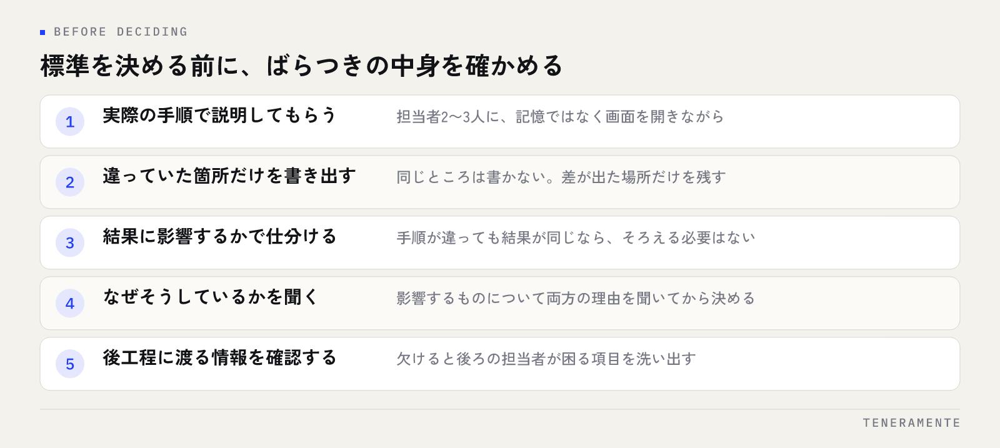

同じ作業なのに、担当者によって手順も所要時間も違う。業務標準化の進め方で最初にやることは、手順書を書くことではなく、どこがばらついているかを先に見つけることです。ばらつきの正体が分からないまま手順書を作ると、現場のやり方と合わない文書が1つ増えるだけで終わります。
📌 この記事の結論
標準化とは作業を縛ることではなく、判断の基準をそろえることです。手順のうち「誰がやっても同じでなければ困るところ」だけを決め、残りは任せる。この線引きを先に引くと、現場が守れる標準になります。
01業務標準化とは「判断の基準をそろえること」
業務標準化（standardization）は、同じ業務を誰が担当しても同じ結果になる状態を作ることです。ここで言う結果とは、出来上がったものの中身と、所要時間、そして後工程に渡る情報のことを指します。
よくある誤解は、標準化を「作業の手順をすべて文書にすること」と捉えることです。手順をすべて書き出しても、判断が必要な場面で何を基準に決めるかが書かれていなければ、結果はそろいません。たとえば見積書を作る業務なら、入力欄の埋め方よりも、値引きをどこまで自分で判断していいかのほうが結果を左右します。
標準化とマニュアル化は別の工程です。標準化は「何をそろえるかを決める」こと、マニュアル化は「決まったことを人に渡せる形にする」こと。この順番が逆になると、書いた本人以外は使えない文書ができます。マニュアルそのものの書き方は業務マニュアルの作り方に整理していますが、その前段にあるのがこの記事の内容です。
02標準化する業務の選び方
全部をいちどに標準化しようとすると、まず止まります。対象は次の3つを満たすものから選びます。
- 複数の人がやっている：1人しかやっていない業務は、標準をそろえる相手がいません（別の課題です）
- 繰り返し発生する：月に数回以上。年1回の業務は手順メモで足ります
- ばらつきが誰かに迷惑をかけている：後工程の手戻り、問い合わせ、再入力が起きている
3つ目が判断の軸です。やり方が人によって違っても、誰も困っていなければ標準化の優先度は低くなります。逆に、前の工程の書き方が人によって違うせいで後工程が毎回確認している業務は、優先度が高いと考えてください。
「困っている人」から探すと対象が決まる
標準化の対象は、作業している本人より後工程の担当者に聞くと早く見つかります。「どの依頼が来たときに確認が必要になりますか」と聞けば、ばらつきが問題になっている業務が具体的に挙がります。本人は自分のやり方を標準だと思っているため、本人だけに聞くと差が出てきません。
03現状のばらつきを確かめる
対象が決まったら、標準を決める前に現状を見ます。順番は次のとおりです。

- 担当者2〜3人に、同じ作業を実際の手順で説明してもらう。記憶ではなく画面を開きながら
- 違っていた箇所だけを書き出す。同じところは書かない
- 違いが結果に影響するか、しないかで仕分ける
- 影響するものについて、なぜそうしているかを聞く
- 後工程に渡る情報のうち、欠けると困るものを確認する
3と4が肝心です。手順が違っても結果が同じなら、そろえる必要はありません。そして、違っているやり方には理由があることが多く、片方だけが正しいとは限りません。両方の理由を聞いてから、どちらを標準にするかを決めます。
この工程を飛ばして、できる人のやり方をそのまま標準にすると、他の人がなぜその手順なのかを理解できないまま形だけ真似る状態になります。業務の流れ全体を図にして見る方法は業務フロー図の書き方にまとめています。
04決める粒度：そろえるところと、任せるところ
標準化でいちばん失敗するのは、決めすぎることです。粒度の判断は次の表で分けます。
| 種類 | 扱い | 例 |
|---|---|---|
| 後工程に渡る情報 | そろえる | 記入する項目、ファイル名、置き場所 |
| 判断の基準 | そろえる | 自分で決めてよい範囲、上に確認する条件 |
| 守るべき期限・順序 | そろえる | いつまでに、どの工程の前に終わらせるか |
| 作業の進め方 | 任せる | どのツールの画面から入るか、作業の順番 |
| 文章の言い回し | 任せる | 連絡文の表現、メモの書き方 |
線引きの基準は1つです。それが人によって違うと、他の誰かが困るかどうか。困らないものを決めると、現場は「言われたから守る決まり」として扱い、やがて守られなくなります。
標準化で決めるのは手順の全部ではなく、揃っていないと誰かが困る部分だけです。
05守られる状態にするのは、文書より仕組み
決めた標準が守られるかどうかは、書いた文書の出来よりも、守るのが自然になっているかどうかで決まります。段階としては3つあります。
もっとも弱いのが、文書に書いて周知する形です。読む手間がかかるため、忙しいときに真っ先に省かれます。次が、使う場所に置く形。入力画面の横に注意書きを置く、テンプレートを配るなど、作業の流れの中で目に入るようにします。
いちばん強いのは、仕組みの側に埋め込む形です。入力フォームの必須項目にする、選択式にして表記を統一する、期限を過ぎたものが一覧に出るようにする。こうすると、標準を覚えていなくても結果がそろいます。
ここまで来ると、標準化は業務アプリやツールの話とつながります。ただし順番は、標準を決めてから仕組みに落とすことです。決まっていないものをそのままシステムにすると、ばらつきが固定されます。ツール選びの考え方は業務効率化ツールの選び方が参考になります。
06改訂が止まると、標準は形だけになる
標準は作った時点から古くなります。改訂が続く形にしておかないと、実際のやり方と文書が食い違い、やがて誰も見なくなります。
続けるために決めておくのは3つです。
- 誰が直せるか：1人に限定すると、その人が忙しいときに止まります。業務を担当している人が直せる形にします
- いつ見直すか：期間ではなく出来事で決めます。手戻りが起きたとき、人が増えたとき、ツールを変えたとき
- 変えたことをどう伝えるか：更新履歴を1行残し、関係者に一言流すところまでを手順に含めます
例外を認めないと、標準は裏で破られる
現場には標準に当てはまらない案件が必ず出てきます。例外を認めない運用にすると、報告されないまま独自のやり方で処理され、記録にも残りません。「例外のときは誰に相談するか」を標準の中に書いておくと、例外が見える形で上がってきて、次の改訂の材料になります。
07よくある失敗と、その見分け方
標準化が進まないときは、たいてい次のどれかに当てはまります。
- 文書を作ることが目的になっている：使われた回数を誰も見ていない状態です
- できる人のやり方をそのまま標準にした：理由が共有されていないため、応用が利きません
- 決めすぎている：守る項目が多すぎて、全部守る人がいなくなります
- 直す人が決まっていない：最初の食い違いが出た時点で放置されます
- ばらつきを見ないまま決めた：現場の実態と合わず、裏で別のやり方が残ります
見分け方は簡単で、標準化したはずの業務について、後工程の担当者に確認の手間が減ったかを聞くことです。減っていなければ、そろえた場所が間違っています。進め方の全体像はAI業務改善の進め方の段階分けと合わせて読むと整理しやすくなります。
標準化は現場の裁量を奪うことになりませんか？
人数が少ない会社でも標準化は必要ですか？
マニュアルを作ったのに使われません。どこから直せばよいですか？
08まとめ：ばらつきを見て、困るところだけ決める
業務標準化の進め方は、対象を絞り、現状のばらつきを確かめ、そろえる範囲を決め、仕組みに落とし、改訂を続ける流れになります。手順書から着手しないことが、いちばんの要点です。
そして、決める基準は人によって違うと誰かが困るかどうかの一点です。困らないものは任せる。困るものは文書で呼びかけるのではなく、入力項目や一覧の形で仕組みに埋める。この形にできると、新しく入った人が特別な説明なしに同じ結果を出せるようになります。
TENERAMENTEでは、業務のばらつきを洗い出す段階からご一緒し、決まった標準を入力フォームや一覧として形にするところまでを支援しています。業務アプリとしての作り方はAI業務アプリ開発のページにまとめていますので、どこから標準化すべきか迷っている段階でも、お問い合わせよりお気軽にご相談ください。